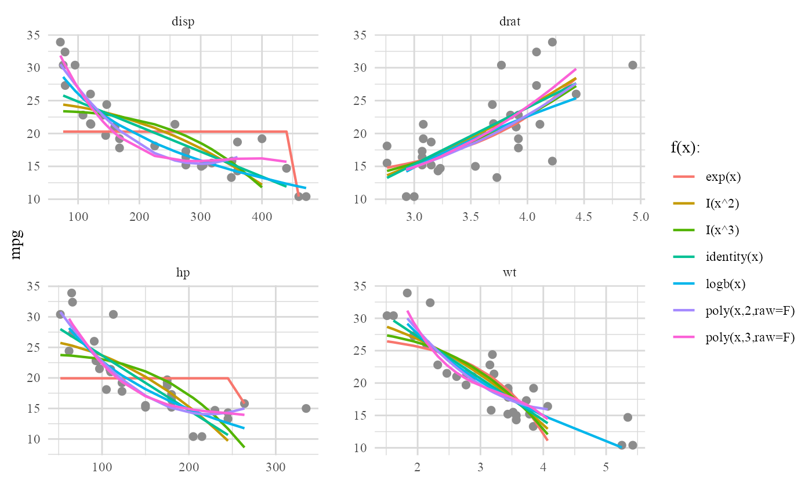
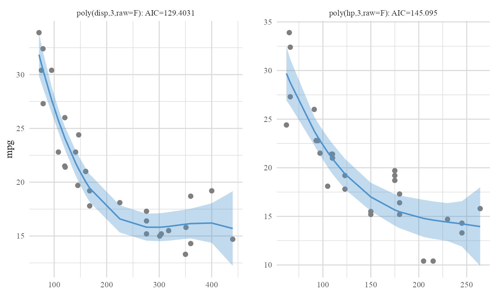

autoGAM.RdAutomatic evaluation of different forms (functions) of predictors to obtain the best Generalized Additive Model (GAM).
autoGAM( resp, resp.base = NULL, cont.vars = c(), cat.vars = c(), forms = list("identity", "logb", "exp", power = 2:3, poly = 2:3), data, ignore.outliers = F, family = gaussian(link = "identity"), raw.poly = F, forms.plot = F, backward = T, backward.test = "LRT", backward.alpha = 0.05, interval.alpha = 0.05 )
| resp | Name of the response variable. |
|---|---|
| resp.base | Base level of the binary response variable, default is NULL. |
| cont.vars | Vector containing names of continuous variables, default is c(). Also see data argument. |
| cat.vars | Vector containing names of categorical variables, default is c(). Also see data argument. |
| forms | A named list of continuous predictor(s) form(s) with their respected degree(s) or degree(s) of freedom. Famous functions that one can think of are identity, log, log2, logb, exp, bs & ns (from splines package), s (from gam package) and cut,default is list('identity','logb','exp','power'=2:3,'poly'=2:3). The names of the list are the function(s) names and their respected value(s) are their degree(s)/degree(s) of freedom. Only functions with the form: f(x) or f(x,degree) with a vector or a matrix as their output should be included in this list. Note: Functions with the f(x) form can be passed in 2 ways: 1. 'f'=c() or 2. 'f'. Any function of the form f(vector,degree) should be passed as 'f'=desired degree(s). If a function of the form f(vector,degree) is passed as a single character, the default value for degree will be used and if there's no default value for degree, an error will occur. |
| data | Dataset containing the response and all the predictors. Note: When the cont.vars & cat.vars arguments are BOTH left empty, variables and their respected types that are given in the dataset will be automatically used to distinguish continuous and categorical variables that are available in the whole dataset. If only one of two cont.vars & cat.vars was left empty, remaining variables in the dataset other than the filled argument (either cont.vars or cat.vars) and the response will be discarded. It is recommended to let autoGAM decide only when your data object only consists of your desired response & predictors with right types. |
| ignore.outliers | Logical indicating whether outliers should be ignored during the evaluation process of predictors forms or not, default is FALSE. When TRUE, outliers in case of response are detected by car::outlierTest which is based on studentized residuals of records and outliers in case of the predictor are determined as records that have hat-values > 2p (where p is the number of parameters inside the model). |
| family | Family for the response variable in GLM fits, default is gaussian(link='identity'). |
| raw.poly | Logical indicating whether raw forms of polynomials should be included when polynomial forms ('poly') are being evaluated, default is FALSE. |
| forms.plot | Logical indicating whether plots for all evaluated forms on all continuous predictors should be included in the output or not, default is FALSE. |
| backward | Logical indicating whether backward elimination should be done on the obtained best forms of predictors, default is TRUE. |
| backward.test | Name of the test to be used in the backward elimination process on GLM fits. Valid inputs are 'LRT', 'Rao', 'Chisq' and 'F', default is 'LRT'. |
| backward.alpha | Numerical value of alpha for the backward elimination process, default is 0.05. |
| interval.alpha | Numerical value of alpha for the creation of confidence intervals of predictions. |
A comprehensive list containing information of the whole evaluation process, backward elimination process and the final GAM model. Result includes:
1- $`Forms data`: A nested data frame including full information of evaluation process. It includes values and predictions for all form(s) on all predictor(s).
2- $`Forms plot(s)`: Plots of the dataset in $`Forms data` (Included if argument: forms.plot=TRUE).
3- $`Backward info`: Step by step list of information regarding the backward elimination process (elimination alpha = backward.alpha) (Included if argument: backward=TRUE).
4- $`Final predictors`: Final predictors (best form of continuous predictors and categorical predictors) that are included in the best GAM model. If the backward argument was set to FALSE, best forms of continuous predictors (and possibly the categorical variables) are returned.
5- $`Best forms plot(s)`: Plots with corresponding confidence intervals (alpha = interval.alpha) of predictions for final best model of each continuous predictor.
6- $`Final GAM`: Final fitted GAM based on final predictors in the $`Final predictors` part.
Shahin Roshani
#> $`Forms data` #> # A tibble: 28 x 4 #> var form data aic #> <chr> <chr> <list> <dbl> #> 1 disp identity(disp) <tibble [29 x 6]> 152. #> 2 hp identity(hp) <tibble [30 x 6]> 163. #> 3 drat identity(drat) <tibble [30 x 6]> 176. #> 4 wt identity(wt) <tibble [27 x 6]> 131. #> 5 disp logb(disp) <tibble [30 x 6]> 138. #> 6 hp logb(hp) <tibble [29 x 6]> 145. #> 7 drat logb(drat) <tibble [28 x 6]> 165. #> 8 wt logb(wt) <tibble [27 x 6]> 128. #> 9 disp exp(disp) <tibble [30 x 6]> 188. #> 10 hp exp(hp) <tibble [30 x 6]> 193. #> # ... with 18 more rows #> #> $`Forms plot(s)`#> #> $`Backward info` #> $`Backward info`$step0 #> Df Deviance AIC scaled dev. Pr(>Chi) #> poly(disp, 3, raw = F) 3 118.80249 150.7873 7.12479703 0.06802467 #> logb(drat) 1 95.14077 147.6800 0.01744424 0.89492367 #> poly(hp, 3, raw = F) 3 123.90795 152.1338 8.47125000 0.03721314 #> poly(wt, 2, raw = F) 2 101.96066 147.8953 2.23278694 0.32745866 #> vs 1 95.20352 147.7011 0.03854482 0.84435318 #> #> $`Backward info`$`step1: removed logb(drat) [Pr(>Chi) = 0.8949]` #> Df Deviance AIC scaled dev. Pr(>Chi) #> poly(disp, 3, raw = F) 3 119.15500 148.8821 7.20216475 0.06572576 #> poly(hp, 3, raw = F) 3 127.42944 151.0305 9.35056682 0.02497539 #> poly(wt, 2, raw = F) 2 102.14325 145.9526 2.27259672 0.32100507 #> vs 1 95.27515 145.7251 0.04516609 0.83169892 #> #> $`Backward info`$`step2: removed vs [Pr(>Chi) = 0.8317]` #> Df Deviance AIC scaled dev. Pr(>Chi) #> poly(disp, 3, raw = F) 3 119.4853 146.9707 7.245568 0.06446921 #> poly(hp, 3, raw = F) 3 132.3204 150.2358 10.510631 0.01468895 #> poly(wt, 2, raw = F) 2 103.4207 144.3503 2.625147 0.26912651 #> #> $`Backward info`$`step3: removed poly(wt, 2, raw = F) [Pr(>Chi) = 0.2691]` #> Df Deviance AIC scaled dev. Pr(>Chi) #> poly(disp, 3, raw = F) 3 269.6056 169.0112 30.660967 1.001884e-06 #> poly(hp, 3, raw = F) 3 138.4360 147.6816 9.331293 2.519553e-02 #> #> #> $`Final predictors` #> [1] "poly(disp, 3, raw = F)" "poly(hp, 3, raw = F)" #> #> $`Best forms plot(s)`#> #> $`Final GAM` #> #> Call: glm(formula = final_formula, family = family, data = data) #> #> Coefficients: #> (Intercept) poly(disp, 3, raw = F)1 poly(disp, 3, raw = F)2 #> 20.091 -17.685 7.759 #> poly(disp, 3, raw = F)3 poly(hp, 3, raw = F)1 poly(hp, 3, raw = F)2 #> -11.046 -11.916 2.709 #> poly(hp, 3, raw = F)3 #> 2.235 #> #> Degrees of Freedom: 31 Total (i.e. Null); 25 Residual #> Null Deviance: 1126 #> Residual Deviance: 103.4 AIC: 144.4 #>